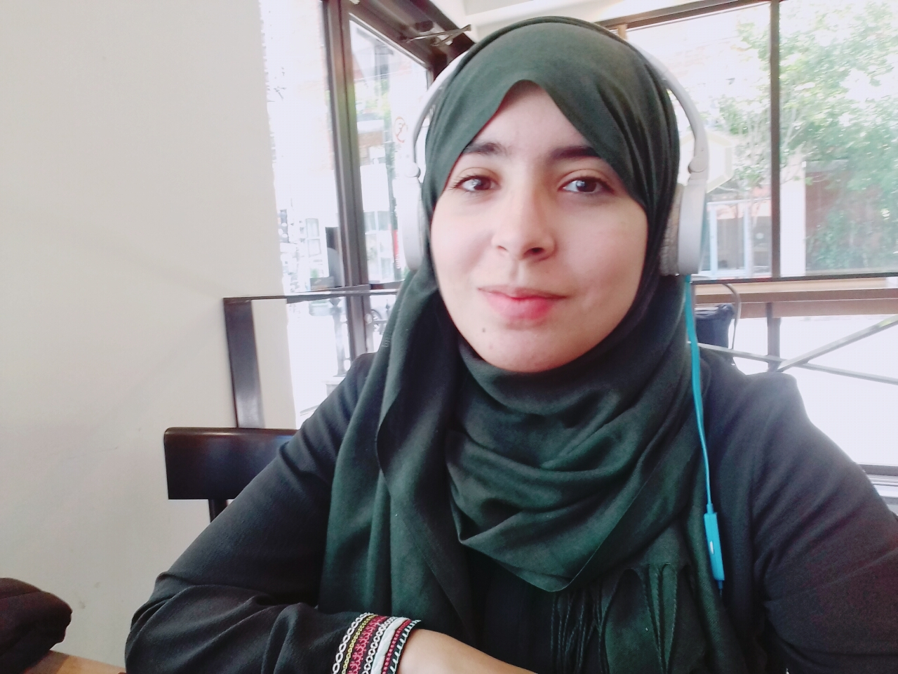

Manel Charouni, Web developer
A Tunisia-based web developer who's down to learn something new everyday.
Six years ago, ending up a web developer was nothing of what I've planned back then...
After studying biology in high-school, the initial and natural plan was to pursue chemical enginering in
university. But what happened was I rethought my carrer plans and digged deep into my real passions and
how intriguing computer science was to me. By exploring and combining my passion, purpose, and what I
really wanted, I started software engineering studies, and am most grateful for doing so. I have learnt
a lot ever since and develepod a true passion for web and mobile development. I have experienced life
abroad and I strive for diversity and enjoy working within multicultural teams.
Please reach out to me through facebook, skype, linkedIn or Gmail to tell you more!
Thanks for passing by !
Read more